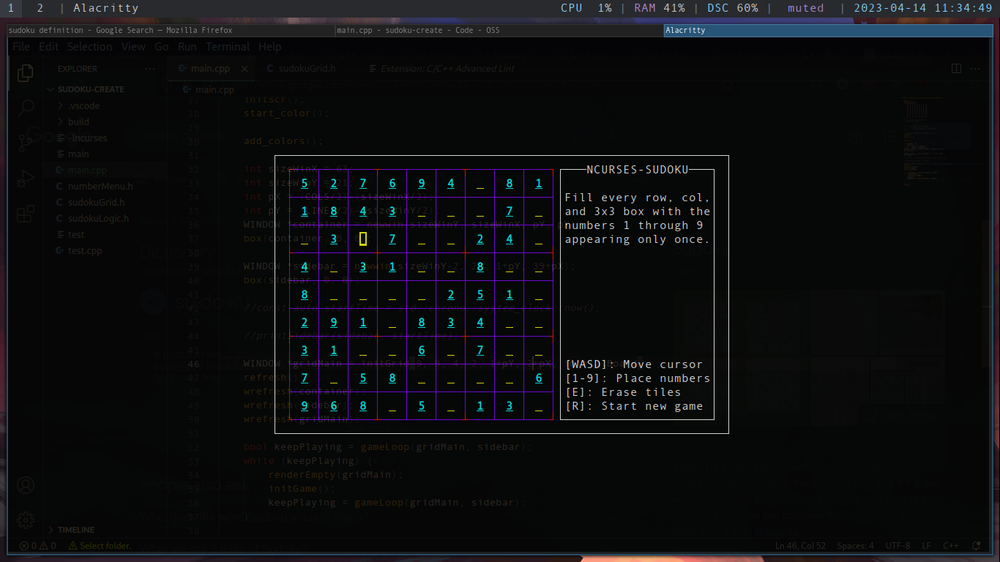

Sudoku
April 2023
For my Create Task portion of AP Computer Science Principles, I decided to challenge myself a bit and create Sudoku using C++
(something I used to resoundly hate). A lot of the first few weeks was setting up my window and creating the game board, as I
researched Sudoku generation algorithms and implementation. After finishing the graphical task of creating a Sudoku-esque board
on the terminal window, I decided to create my own rendition of a Sudoku board generator which uses backtracking to fill the board
according to the game's rules. Then, I saved a copy of that board, and removed most of the tiles to form the initial game board
the user would play on.
I then displayed that board to the window, and inserted simple WASD (+ other keys) controls in order to traverse and edit the game board.
As shown in the demo, I additionally coded an automatic error checking system which would highlight tiles which broke Sudoku rules in red.
As a finishing touch, I added the option to generate a new board at any time using the backtracking algorithm from earlier, after seeing
that the program was unusable once the game completed.
Due to College Board's restrictions on publishing Create Task code publicly to the internet, all I can provide is this screenshot of the final
product. The actual executable doesn't even compile on my Windows machine either, and to be honest I don't want someone feeding it through something
like Ghidra and making a replica.
